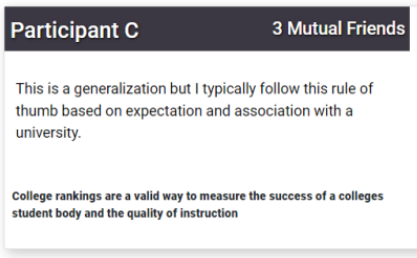
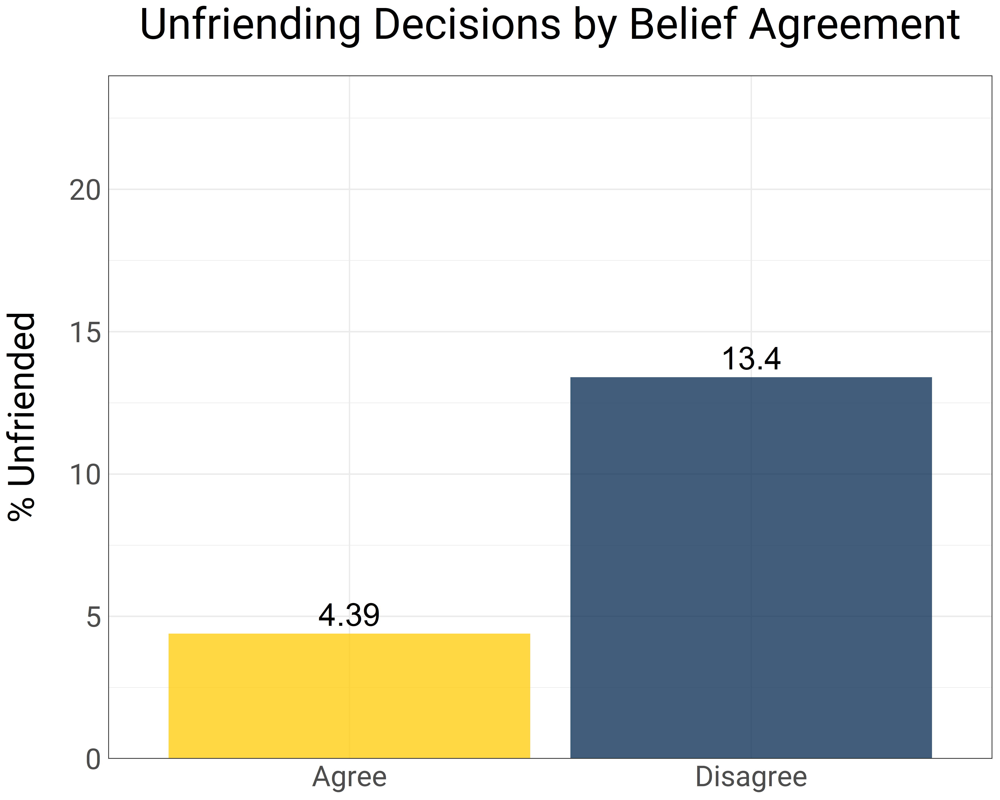
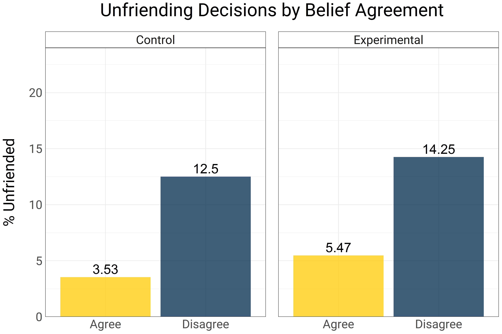
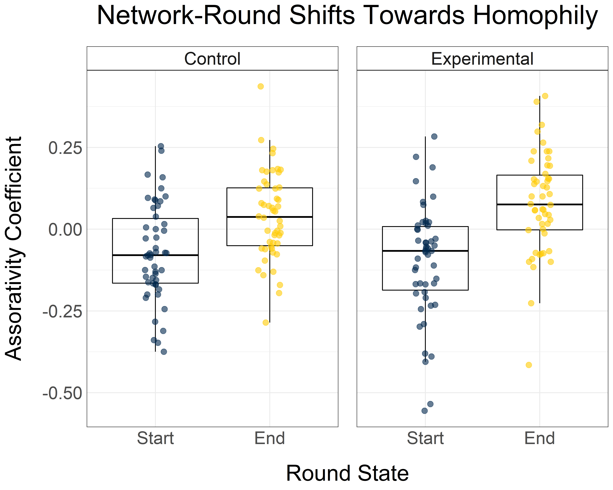

Belief Consonance and Conversational Network Polarization
Clint McKenna
February 23rd, 2023
Hosting controversial speakers on campus is important as it encourages free speech and allows campus communities to express their constitutional rights
vs.
Universities should not give platforms to discriminatory or problematic speakers, as this often hurts marginalized groups
Reputation cues
Half of the networks had a repuation cues condition where number of mutual connections appeared alongide peer information

Only 8.6% of decisions led to unfriending

No interaction with reputation condition

Do the networks shift to become more polarized within each round?
Node Assortativity
-1 (disassortative) to
1 (assortative)

Only 8.6% of decisions led to unfriending
No interaction with reputation condition
